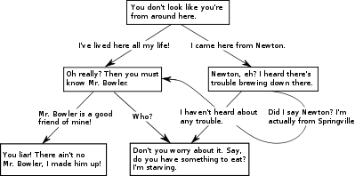

Sistema de Diálogos
Esse documento detalha a criação de novos diálogos, e como eles são inseridos e exibidos dentro do jogo. O sistema de diálogos envolve, dentre outros, os componentes abaixo:
DialogTree.cs
Uma DialogTree é uma estrutura que armazena um fluxo de diálogos que se pode ter com um NPC. Ela possue um DialogTreeNode como raiz, e cada DialogTreeNode possue nós filhos, que podem ser alcançados a partir de respostas específicas do jogador, ramificando a interação entre NPC e jogador e produzindo respostas diferentes para ações diferentes do usuáro.
DialogTreeNode.cs
Cada nó de uma DialogTree representa as possíveis falas de um NPC no jogo.
public class DialogTreeNode : ScriptableObject
{
List preconditionIds;
List lockconditionIds;
List rewardIds;
string response;
string message;
List children;
...
}
O campo message será exibido na tela sendo a fala do NPC para este nó. Já o campo response, é que resposta do jogador, para um nó anterior, o leva à chegar neste nó. Portanto, em um dado nó, o DialogManager irá exibir como texto de fala do NPC a message deste nó, e vai dar como opções de resposta para esta message todas as responses que estão nos children nodes deste nó.
Para que uma fala apareça para o jogador os campos preConditionIds e lockConditionsIds deverão ser respeitados
preConditionIds: lista de ids de PreConditions que serão necessários que o jogador tenha recebido anteriormente para que seja possível que o diálogo do nó seja disponibilizado.lockConditionIds: lista de ids de PreConditions que, caso o jogador possua, não permitirá a aparição do diálogo do nó.
É possível que ao passar por um nó da DialogTree o jogador receba rewards, as quais deverão ser colocadas no campo rewardIds.
StartQuestTreeNode.cs e EndQuestTreeNode.cs
Existem dois nós especiais em uma DialogTree: o nó que inicia uma Quest e o que termina uma Quest. Esse dois nós herdam todas as características do DialogTreeNode e adicionam o campo para o id da quest.
No caso do StartQuestTreeNode, será verificada a possibilidade de ativar a quest.
public class StartQuestTreeNode : DialogTreeNode
{
int questId;
public override void Execute()
{
...
Quest quest = user.GetQuest(QuestID);
if (quest != null && !quest.Unlocked)
{
quest.Activate(user);
GameManager.Instance.UpdateQuestUI();
}
}
}
Já no caso do nó que termina uma Quest, será verificado a possibilidade de finalizar a quest.
public class EndQuestTreeNode : DialogTreeNode
{
int questId;
public override void Execute()
{
...
Quest quest = user.GetQuest(QuestID);
if (quest != null && !quest.Done)
{
quest.Finish(user);
AlertBox.Instance.OpenWindow (GameConstants.QUEST_COMPLETED, quest.QuestDoneMessage);
MusicPlayer.Instance.PlayFX (doneFX);
GameManager.Instance.UpdateQuestUI();
}
}
}
Ambas as ações são realizadas dentro do método Execute() do DialogTreeNode, que é executado assim que o jogador alcança este nó pela DialogTree
DialogManger.cs
O gerenciador de diálogos é responsável por controlar toda a interação entre jogador e NPC. Ele possue um método Speak() capaz de invocar uma box de diálogo, dado uma DialogTree e um Speaker. Toda a interação realizada pelo resto do díalogo, como passar de DialogTreeNode em DialogTreeNode, exibir as mensagens e esperar pela resposta do jogador será gerenciada por esta classe.
...
public bool Speak(DialogTree dialog, Speaker speaker)
{
if (IsSpeaking && dialog.Priority <= curDialog.Priority)
return false;
WaitUntilItEnds ();
return StartConversation (dialog, speaker) != 0f;
}
...
Speaker.cs
Esta classe permite à um NPC iniciar diálogos. Ela recebe uma lista de DialogTrees, que serão todas as árvores de diálogos que este NPC será capaz de falar, e se comunica com o DialogManager para iniciar um diálogo através do método Speak(). Entretando, apesar de tornar o NPC capaz de interagir com o jogador, ela não especifica como essa interação irá ocorrer, ou seja, que input iniciará o diálogo. Para isso, ela pode ser extendida pelas classes InterativeSpeaker.cs ou AutoSpeaker.cs.
public class Speaker : MonoBehaviour
{
public List dialogs;
public int defaultDialogIndex;
protected DialogManager dialogManager;
...
}
InterativeSpeaker.cs
É uma extensão da classe Speaker para definir de que forma os diálogos do NPC serão iniciados. O InterativeSpeaker espera que o jogador se aproxime do NPC, e aperte o botão de interação do teclado para iniciar o diálogo.
public class InterativeSpeaker : Speaker
{
...
void OnTriggerStay2D(Collider2D collider)
{
if (collider.tag == "PlayerFront")
{
if (Input.GetButtonDown("Interaction"))
{
Speak();
}
}
}
}
AutoSpeaker.cs
É uma extensão da classe Speaker para definir de que forma os diálogos do NPC serão iniciados. O AutoSpeaker inicia o diálogo automaticamente assim que o jogador entra na cena em que o NPC está.